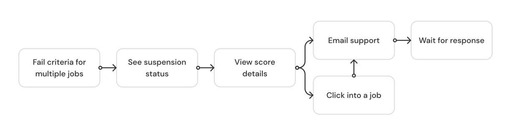
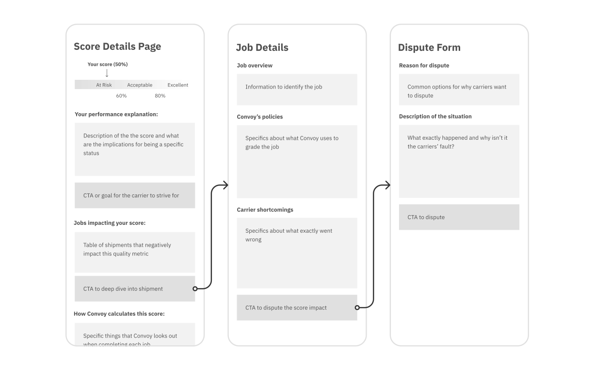
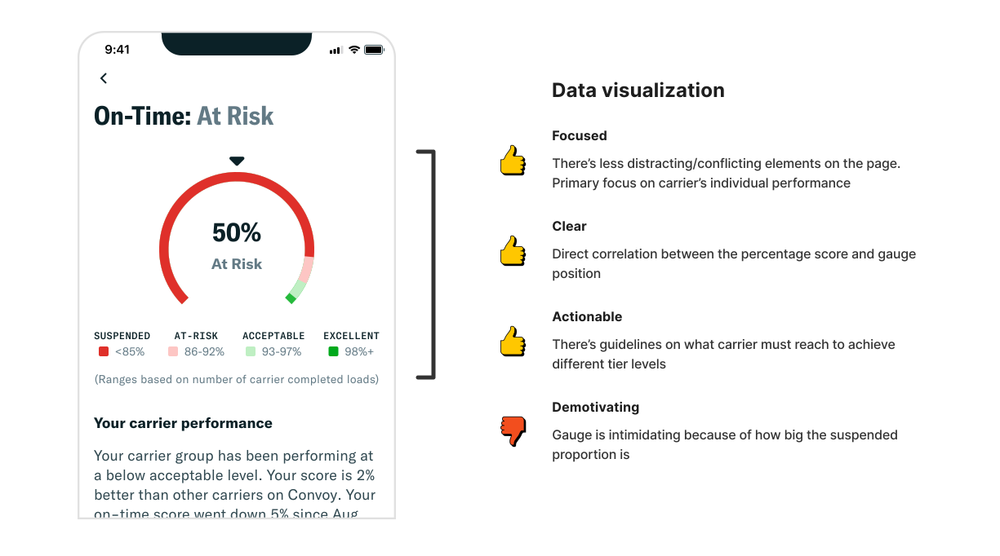
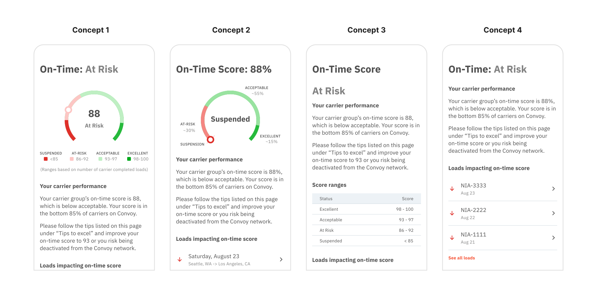

As an initiative to improve Convoy's core app experience, I worked with the Carrier Performance team to redesign the performance scorecard to increase transparency and improve score comprehension.
As a marketplace, Convoy holds a set of standards that defines good performance and determines carriers' scores for three quality metrics: On Time, App Use, and Falloff (load cancellations). Convoy uses the scores to decide the carrier’s standing on the platform and the associated benefits and consequences.
The Account Status is ranked “Good to go,” “Suspended,” “On Hold,” “Deactivated.” It's dependent on the scores for three criteria: On-Time, App Use, and Fall Offs.
If one of the criteria falls into a Suspended state, then the account is “Suspended” and the carrier is given a grace period to improve. If they don’t the carrier will be deactivated from the Convoy network.

The Carrier Performance team receives ~15,000 emails a year from carriers wanting to learn more about Convoy policies and their performance, and to dispute a late arrival or falloff.
Past research efforts discovered that a lack of transparency and proper communications about our program, expectations, performance scores, and current status, and how to improve is leading to carrier’s challenges with performance.
"Please tell me why we have been [suspended] from your account. We have met all standard and guidelines the past 3 loads. Why turn us off?
By sharing expectations and tips, it will be clearer to carriers how to be successful on Convoy. This can prevent frustrating situations where the carrier is penalized for messing up and can promote better carrier performance, elevating the quality of carriers for our shippers.
In terms of success metrics, we will be tracking the decrease in performance related support emails related and the increase of number of carriers who "level up" (ex. carriers who go from"acceptable" to "excellent").
Increase transparency and help carriers understand how their score was calculated
Suggest tips to help carriers improve
Inform carriers about the consequences of poor performances
Reduce the number support emails related to carrier performance
Improve the quality of the carriers in the marketplace
I focused the first few days working with the support specialist to understand the carrier pain points. By reviewing past UX research and support emails and having an understanding of the current user flow, I saw that there are clear opportunities for Convoy to educate more in the app and help these truck drivers manage their account statuses and penalties so that they don’t open their app and wake up to frustration, anxiousness, or confusion.

I brainstormed how the scorecard could be designed to give carriers' enough information without overwhelming them with the complexity of the performance system.

With the concepts, I worked on and sought feedback from the Carrier Performance team, managing requirements and brainstorming concepts focused on:
Balancing giving the carrier more transparency with the limitations of the performance system's intimidating score ranges and dynamically changing thresholds
Considering edge cases and nuances of the performance system, such as communicating the Probation state (when the carrier returns to Convoy after a two week suspension)

Once I created the higher fidelity mockup, it became clear to me that the suspended area took up most of the gauge. Even though it aligned with showcasing the data accurately, it looked super intimidating and almost makes it look like Convoy is trying to make the carriers fail. I decided to take a step back from the business requirements and think through an option that can preserve accurate data communication while conveying Convoy’s expectations clearly.

I preferred Concept 1 and liked showing a data visualization of the score ranges for each of the different statues because it helped set a goal in the trucker’s mind, but the PM wasn’t too keen about changing the scoring system and showing the thresholds especially since it’s very intimidating to show the At Risk range being from 0-85. The PM wanted to go with the option with the peer comparison (Concept 2) to help explain why their score is the way it is but I had concerns with the actionability of this chart. I had to figure out an optimal solution that met both design and business needs, resulting with the landed solution.
Introducing the MVP designs that balance the Carrier Performance team's requirements of preventing questions and reducing support emails and and the user needs of understanding what they need to do so that their business can be successful on Convoy.

Carriers see dynamic and more timely information towards the top of the page. The page gives carriers insight into their score and what they should be aiming for the near future. Keeping the same functionality as before, this page provides quick access to loads impacting the carrier's score. A data visualization showing how the carrier compares to other carriers on Convoy helps explain why their score is so.
Carriers see static, evergreen information at the bottom. The page explicitly states how Convoy scores carriers' performance and dives into details about severity levels and time frame for the calculation. There are explicit tips that carriers can follow to improve but we still offer direct line of contact to the team in case the carrier still has questions.

When the carrier clicks in to learn more about a problematic load, they will be able to see what exactly went wrong and which of Convoy's criteria they did not meet.

If a carrier thinks that a load shouldn't negatively impact their score, they can request a review and be asked to fill a form with information that Convoy's internal team will use to evaluate the case. With a standardized way to collect dispute information, carriers can request a review more easily instead of sending an email and Convoy will be able to action on the request more quickly.

Carriers were never able to access performance information in the web platform. Because of this project, performance information will be accessible no matter the platform - carriers will be able to see how they're doing in app and on desktop.
The team is currently building out the scorecard improvements in the Convoy app and it is coming out end of the year! Convoy also has time slated for 2023 Q1 to think about the ideal performance system. This project helped reveal some of the cracks in and the limitations of the existing scoring system. But in the short term, the team plans to continue improving the current scoring system with transparency and carrier comprehension top of mind.